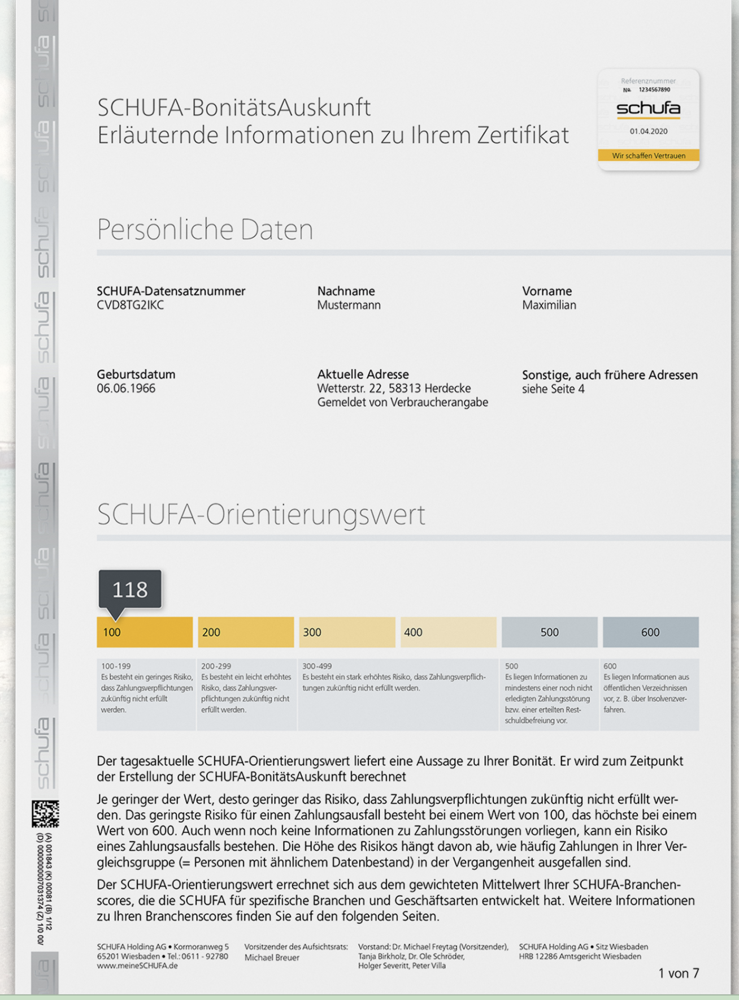
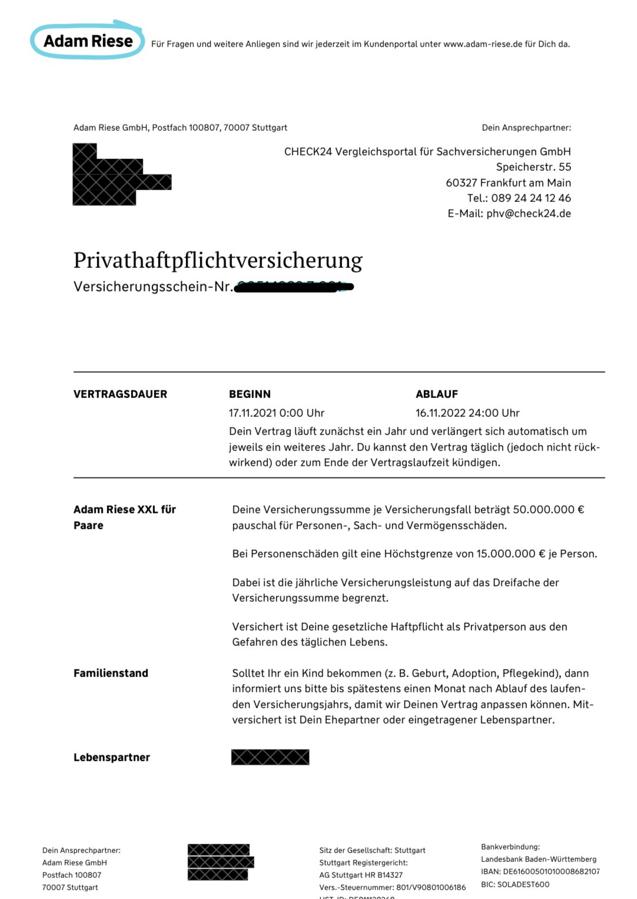
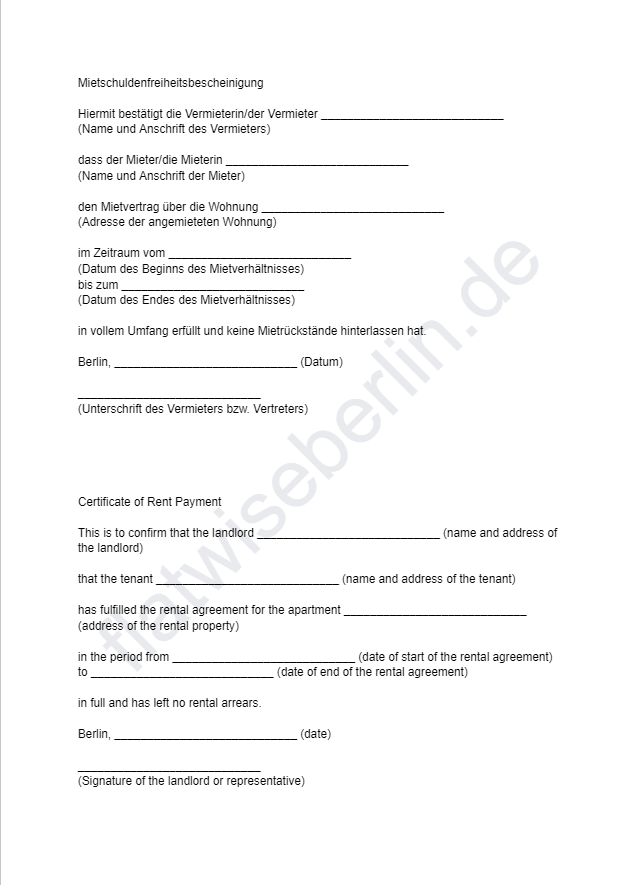
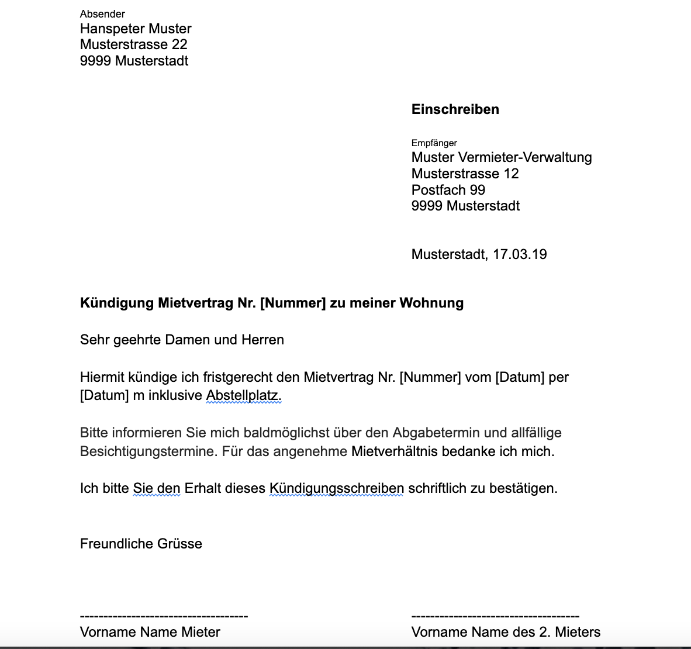

Essential Documents for Flatseekers and Tenants
We know that this country loves bureaucracy, and the rental market is no different. Understanding all the different forms can be super confusing and off-putting for newcomers. So again, we’re here to help! Here you can find examples of the documents you will need on your flat-hunting journey.
Schufa
Many landlords in Berlin require a tenant to provide a Schufa credit report in order to rent a flat. This report is used to assess the tenant’s creditworthiness and ability to pay rent on time.
Anyone can get a Schufa, but for newcomers it’s tricky, as the less information Schufa has on you in Germany, the harder it is to get a high credit score. Getting a German bank account and a German phone contract (which you pay on time) will help.
You could also back up the Schufa with your credit score from your home country, for example using a site like Credit Karma or Experian.
You can order your Schufa certificate here for around 30 Euro. It’s valid for 6 months. https://www.schufa.de

Privathaftpflichtversicherungsschein
A Privathaftpflichtversicherungsschein is a type of insurance certificate in Berlin which is required when you are looking for a flat. It is a document that is issued by a private insurance company. It can be used as proof that you have a valid third-party insurance policy that means you could pay out for any accidental damage you caused to the flat or your neighbours. It is important for landlords to have proof of insurance for their tenants, as it helps to protect them from any potential financial losses if something were to happen to the property. The Versicherungsschein also helps to protect you in the event of an accident or other unforeseen circumstances.

Mietschuldenfreiheitsbescheinigung
The Mietschuldenfreiheitsbescheinigung is a certificate that shows that you do not have any outstanding debts related to your previous tenancy in Germany. The majority of landlords will ask possible tenants for a copy. It is a confirmation that you have paid all of your rent and other charges due to your previous landlord, and that you have no outstanding debts. This certificate is issued by your previous landlord, and it is important to make sure that you get this before you move out of your old flat. (If you have just moved to Berlin, you don’t technically need it, although we’re sure asking your former landlord wouldn’t hurt!).

Bürgschaftserklärung
If you are a student or on a low income, you might want to give your landlord a Bürgschaftserklärung, or ‘guarantor form’ in English. If you have a partner / parent / friend / guardian who earns more than you do, they can sign the form to confirm that they will be responsible for the rent if you can’t pay it. Even if they have no intention of doing this, and you know you’ll be able to keep up with rent payments, it might reassure the landlord enough to trust you with the flat.

Kundigungschrieben
And what about when you want to leave your flat? You need to write a Kundigungschrieben - a letter of termination. And it must be a letter, not an email, that you actually post - we know, post! - to your landlord. We recommend sending it with registered post - per Enschreiben or Zustellungsbescheinigung - so your landlord can’t pretend it didn’t arrive. You need to give 3 months’ notice of termination, and if you’re still in your minimum rental period (usually 1-2 years), you are responsible for finding a new tenant.

Here you can find lots of different template letters you might need to send to landlords once you have a flat.
Such as permission for pets.
Or to signal your intention to enact the Mietpreisbremse when you think your rent is illegally high.
Or when there’s a problem with the flat.
Here you can find a template application letter in German and English that you can use when looking for flats. Just add your details!